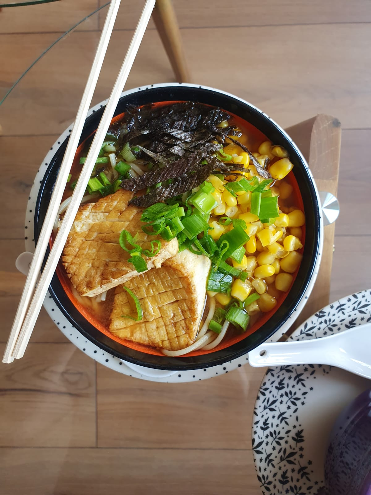

Ramen
Volver

Te enseñaré a preparar un ramen vegano buenísimo
Este ramen lo hacemos con la Fran mucho, porque nos encanta el ramen. Puede ser un poco intimidante, porque si no estás acostumbrando a preparar este tipo de comidas, tiene ingredientes que vas a descnocer. No pasa nada, son fáciles de comprar y te van a abrir el mundo a un nuevo universo de recetas.
Ingredientes
Para el caldo
- Miso
- Ajo
- Gengibre
- Aceite de sésamo
- Salsa de soya
- Azúcar
- Caldo de verduras
Para los toppings
- fideos
- Tofu
- Choclo
- Cebollín
- Alga
- Semillas de sésamo
Pasos
Para el caldo
- Corta el ajo y el gengibre en pedacitos pequeños
- Saltea el ajo con el gengibre con aceite de sésamo
- Ponle agua hervida, y sobre esa agua disuelve el miso
- Agrega la soya, el azúcar y el caldo de verduras
- Deja hervir mientras preparas los toppings
Para los toppings
- Cocina tus fideos
- Fríe el tofu junto con alineos
- Cuece el choclo
- Corta el cebollín y deja reposar en agua
- Corta franjas de alga
Para montar
- En un bowl pon los fideos
- Sobre los fideos coloca el caldo
- Sobre ambos, pon tus toppings